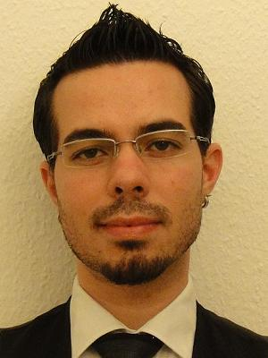

Quality oriented engineer looking for positions that require organization and communication skills, dealing with people and process management. Goal oriented and motivated to improve deliveries through inspiring teams. Good analytical skills with strong technical background in mobile, web technologies, software development and database systems. Professional experience with test planning/execution in all testing stages and project management. Research experience with artificial intelligence and distributed systems. Proficient with both Kanban and Scrum processes and coordinating small to medium teams. References and certificates available on request.

Current Month: 09.2014
INTERESTS
Professionally: Project Management, Quality Assurance, Game Design, Artificial intelligence, Robotics. Leisure: Digital and Roleplaying Games, Movies, Creative Writing, Vegetarian or Vegan Cooking.
MAIN SKILLS
Portuguese English German Swedish
Java C C++ MySQL
HTML/HTML5 XML Sencha Touch
Javascript CSS
Mobile Systems Test Automation Jetty and Webservlets Android Hadoop
AVB is an Android application for browsing, improving and training vocabulary. The base for learning is in English, using Wordnet 3.0, but the translations are compiled through logically associating words from another database to the existing terms and meanings inside Wordnet. Used to train and learn Android Programming. Licensed under GPLv3. https://avb.cloudcontrolled.com/
Pivotal Analytics is a web tool for statistical observation and performance measurement of Pivotal Projects. Metrics available are starvation, velocity, throughput, burn-down charts, individual developer load, performance and story distribution per label. Uses Java Servlets and Pivotal API v5 to fetch data. Licensed under aGPL. https://pivotalanalytics.cloudcontrolled.com/
AOS is a tool for managing personal goals. The user can add goals, break them into tasks and log work so statistics can be calculated such as productivity, completion, focus, etc. Uses Sencha Touch 2.3.1 bundled with its own Java Servlet REST API and MySQL for storage. Used as final project for HTML5/Sencha course. Licensed under aGPL. https://aos.cloudcontrolled.com/
Dark fantasy novel for young adults. Written in 2006 but published in 2012 through one of Brazil's largest publishers. Translated in 2012 to English and self published through Amazon CreateSpace and Kindle Publishing in 2014. It has 107775 words in the Portuguese edition and 120897 in the English edition. ISBN: 978-1500128364 ISBN: 978-8576798071
C Again Shell is a simple shell developed with René de Souza Pinto as a final project for Operating Systems course. This shell is capable of interpreting scripts using (limited) C language, but in a much more effective and powerful way than CSH. Written in C and licensed under GPLv3. https://github.com/matheuscodes/cash
Visual Meta GmbH is an innovative Internet company based in Berlin owning LadenZeile and ShopALike websites for fashion and furniture shopping. The websites are used by thousands of daily visitors and the company has an ever-increasing number of partner shops. As the Backend Product Manager for the company, reporting directly to the managing directors, the responsibilities are:
Focus on the development and implementation of backend strategy and working processes
Contribute to and ensure achievement of team and company targets
Collaborate closely with internal teams to
determine new features/requirements,
develop concepts for implementation of features,
support and explain application usage and
handle bug reports.
Work directly with Managing Directors and collaborate with Technical Team leaders to
coordinate planning/prioritization and assignment of development tasks,
steer software development process,
supervise and monitor backend operations and
report key metrics and KPIs.
The Backend Products consist of several software components, mostly distributed and database intensive, composing the heart of the company. The main focus of the Backend is divided between its largest components: an importation system, a classification system and a statistical system, all surrounded by a company branded toolset based on GWT technology. My major undertakings in the position were:
Drive reduction of statistical error on estimations from 30% to less than 10%;
Design and implement the entire software development process for the team from scratch;
Learn specifics and become a technical reference of the product in less than 6 months;
Through review and investigation, bring the incidents reported by the system down to a third;
Reorganize and structure the entire backlog, formalizing new requests and requirements;
Support team expansion on recruiting and managing new team members.
Keywords: error management, mobile, scrum master, test automation, kanban, agile testing, quality assurance, searching, routing, positioning, rendering, location based services.
Nokia is a multinational company with a range of products where its technology and design made it one of the most notorious brands in mobile communications. Their site in Berlin is responsible for delivering and maintaining Nokia's location based solutions.
The Senior Quality Assurance Engineer role involved Test and Error management on Nokia Maps for S40, which belonged to the company's portfolio for BRIICA markets, conducting the following activities:
Managing errors with prioritization and estimation;
Executing development testing, such as regression and error verification;
Automating tests, using C++ and toolset for component API;
Documenting and designing test cases with test planning;
Maintaining error reports and other quality measurements.
The team was mainly divided by our software layers, separating the Maps application in three components: UI, Middleware and Engine. Our activities were all focused on the Engine, providing routing, search, rendering and positioning. The products our team successfully delivered were:
Nokia Maps for Full Touch S40 Devices (Asha 305 and Asha 311) [2012]
Nokia Maps for Hybrid S40 Devices (C2-02, C2-03 and Asha 303) [2011]
Maps for GPS equipped S40 Devices [2009/2010]
which included full Navigation (various devices, e.g. Nokia 6700 Classic)
Among many, my contributions to the team were:
Create several report templates and train external testers to improve resource efficiency;
Become a technical reference for the logic and functionality of the engine;
Write a set of automated stress tests allowing very early detection of engine bottlenecks;
Training and widening the knowledge within new members to the quality assurance team;
Build a series of statistical tables and reports for managing directors;
Successfully coordinate tasks with different teams spread in 4 countries and 3 different time zones.
Founder and General Coordinator
11.2004 – 10.2008
Fellowship of the Game São Carlos - Brazil
Keywords: entrepreneurship, game development, team leadership, development process, game design, project management, strategy planning, resource management.
Fellowship of the Game is a non-profit organization of computer games research and development at ICMC-USP. The organization was created to provide graduation students a way of applying their recently acquired knowledge into practical projects in Game Development. It was built as a company, based on departments, trying to extend the team experience to the most professional possible. The group grew to over 30 people and our achievements were:
Defining the entity with clear roles, departments and divided responsibilities;
Integration into the official research groups within the University;
Provide students a place to learn and experiment with entrepreneurship;
Establish extracurricular support and periodic game development events;
Solidify the culture in a stable group that lives and operates to the day.
Activities in the role of General Coordinator included:
Define and maintain development and organizational processes;
Planning, assessing risks and defining roadmaps;
Create strategies and a vision for the team;
Gather professor support and sponsorships;
Provide feedback on targets and achievements to the University;
Recruit and train competent members to take ownership of the organization;
Incentive participation in national and international game development events,
both as organizers and competitors;
Lecture Tutor
09.2005 – 06.2008
Institute of Math and Computer Science University of São Paulo
Research in Electromyography Signal Processing.
Laboratory: LABCIBER - Biomedical Engineering Laboratory.
Focus on using Artificial Neural Networks in signal pattern recognition.
Application on providing control of electronic devices for patients with physical disabilities.
Programming Language: Matlab
OTHER PERSONAL ACCOMPLISHMENTS
Achievement Award
07.2012
Granted by Nokia Mobile Phones – Location Based Services
Brazilian Site Organizer
01.2009
Global Game Jam 2009
Java Development for a Distributed Game using CORBA
11.2008
Published by 16th SIICUSP – International Symposium for Junior Researchers